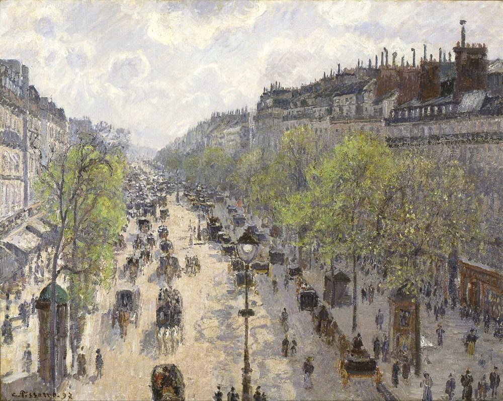
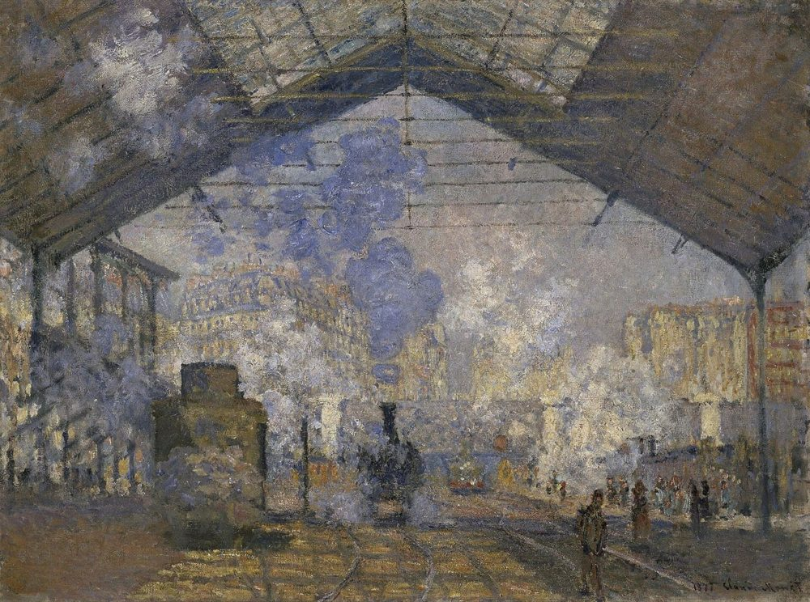
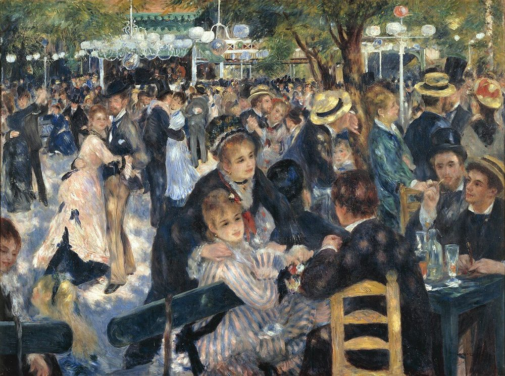

Le subjonctif et ses locutions
The subjunctive and its conjunctions
Former le subjonctif sans hésiter
Forming the subjunctive with confidenceSubjonctif présent
present subjunctiveRadical de ils au présent de l'indicatif + -e, -es, -e, -ions, -iez, -ent
ils choisissent → que je choisisse · ils écrivent → que j'écrive
Stem of « ils » in the present indicative + these endings.Nous et vous : mêmes formes qu'à l'imparfait → que nous choisissions, que vous écriviez
Nous and vous: the same forms as the imperfect.Subjonctif passé
past subjunctiveavoir / être au subjonctif + participe passé
que j'aie terminé · qu'elle soit arrivée · que nous nous soyons trompés
Avoir or être in the subjunctive + past participle, with the same agreement rules as the passé composé.Les irréguliers
The irregular verbsLes verbes à deux radicaux
Verbs with two stemsLe radical de nous / vous vient de l'imparfait, celui des autres personnes vient de ils.The nous / vous stem comes from the imperfect; the other persons take the « ils » stem.

Les locutions qui exigent le subjonctif
Conjunctions that require the subjunctiveLe but, la crainte et l'excès
Purpose, fear and excessOn vise un résultat qui n'existe pas encore, on veut éviter un risque, ou on dit qu'une quantité rend un résultat possible ou impossible.You aim at a result that doesn't exist yet, you want to avoid a risk, or you say that an amount makes a result possible or impossible.
L'agence a simplifié le slogan pour que tout le monde le retienne.
The agency simplified the slogan so that everyone remembers it.J'envoie la maquette ce soir afin que le client puisse la valider demain.
I'm sending the mock-up tonight so that the client can approve it tomorrow.Disposez la vitrine de sorte que les passants voient d'abord le sapin.
Arrange the window so that passers-by see the tree first.Elle a réservé l'exposition très tôt, de peur qu'il n'y ait plus de places.
She booked the exhibition very early, for fear there would be no places left.Le texte est trop long pour que les passants le lisent jusqu'au bout.
The text is too long for passers-by to read it to the end.Trop / assez … pour que
Too / enough … for something to happenTrop ou assez + adjectif, adverbe ou nom, puis pour que + subjonctif, quand le sujet change.Trop or assez + adjective, adverb or noun, then pour que + subjunctive when the subject changes.
La salle est assez grande pour que toute l'équipe puisse s'y installer.
The room is big enough for the whole team to fit in.La limite dans le temps
A limit in timeL'action de la subordonnée n'a pas encore eu lieu : c'est un moment attendu, une limite, une perspective.The action in the clause hasn't happened yet: it's an expected moment, a limit, a prospect.
Il faut finaliser l'affiche avant que l'imprimeur ne ferme.
We need to finalise the poster before the printer closes.Nous retravaillerons le visuel jusqu'à ce qu'il soit parfait.
We'll keep reworking the visual until it's perfect.En attendant que le client réponde, prenons un café.
While we wait for the client to reply, let's have a coffee.D'ici à ce que la campagne soit lancée, il neigera peut-être sur Paris.
By the time the campaign is launched, it may be snowing in Paris.Le temps que tu arrives, j'aurai fini la présentation.
By the time you arrive, I'll have finished the presentation.Le temps que : un registre courant
Le temps que: everyday registerLe temps que + subjonctif signifie « pendant le temps nécessaire pour que ». Très fréquent à l'oral. Attention : dans le temps qu'il fait ou le temps que ça prend, c'est l'indicatif, car ce n'est pas une locution.Le temps que + subjunctive means « in the time it takes for ». Very common in speech. Careful: in le temps qu'il fait (the weather) or le temps que ça prend (the time it takes), it's the indicative, because that is not a conjunction.
La concession et l'exclusion
Concession and exclusionOn admet un fait qui ne change pas la conclusion, on dit qu'une chose se fait en l'absence d'une autre, ou on écarte une explication.You acknowledge a fact that doesn't change the conclusion, you say something happens without something else, or you rule out an explanation.
Bien que le budget soit serré, la campagne est ambitieuse.
Although the budget is tight, the campaign is ambitious.Quoiqu'elle connaisse Paris par cœur, elle y découvre toujours de nouveaux musées.
Although she knows Paris by heart, she still discovers new museums there.L'idée est brillante, encore qu'elle soit difficile à réaliser.
The idea is brilliant, though it is hard to carry out.Le stagiaire a modifié le logo sans que personne le lui ait demandé.
The intern changed the logo without anyone asking him to.Non que l'idée soit mauvaise, mais elle arrive trop tard.
Not that the idea is bad, but it comes too late.Bien que + adjectif ou participe
Bien que + adjective or participleQuand le sujet est le même et que le verbe est être, on peut l'effacer : bien que fatiguée, elle a terminé la maquette.When the subject is the same and the verb is être, you can drop it: tired as she was, she finished the mock-up.
Bien que fatiguée, elle a terminé la maquette.
Although tired, she finished the mock-up.La condition et l'hypothèse
Condition and hypothesisLa réalisation dépend d'une condition, d'une exception, d'une supposition ou d'une alternative.Whether it happens depends on a condition, an exception, an assumption or an alternative.
Le client acceptera, à condition que nous respections les délais.
The client will agree, provided we meet the deadlines.Nous irons à Lyon ce week-end, à moins que la grève ne continue.
We'll go to Lyon this weekend, unless the strike goes on.Pour peu qu'il fasse beau, les terrasses seront pleines.
If the weather is even slightly nice, the café terraces will be full.À supposer que la marque refuse, quel serait notre plan B ?
Supposing the brand said no, what would our plan B be?Ce slogan est le meilleur, si tant est qu'un slogan puisse plaire à tout le monde.
This slogan is the best, assuming a slogan can please everyone at all.Soit qu'il ait oublié, soit qu'il n'ait pas reçu le mail, il n'a pas répondu.
Whether he forgot or didn't get the email, he hasn't replied.Pourvu que : deux emplois
Pourvu que: two usesJe signe, pourvu que le prix ne change pas.
I'll sign, as long as the price doesn't change.Pourvu qu'il neige à Noël !
Let's hope it snows at Christmas!Dans la phrase : une condition. Seul, en tête de phrase : un souhait, souvent mêlé d'inquiétude.Within a sentence: a condition. On its own, at the start: a wish, often tinged with worry.
Les tournures « peu importe »
« No matter » structuresOn envisage toutes les possibilités : la conclusion ne change pas.You consider every possibility: the conclusion doesn't change.
Qui que soit le client, nous défendons nos idées.
Whoever the client is, we stand up for our ideas.Quoi que dise le directeur artistique, je garde le rouge.
Whatever the art director says, I'm keeping the red.Où qu'elle voyage, elle visite d'abord les musées.
Wherever she travels, she visits the museums first.Quelles que soient les tendances, Noël reste une affaire d'émotion.
Whatever the trends, Christmas remains a matter of emotion.Quelque originales que soient ces vitrines, elles doivent rester lisibles.
However original these windows are, they must remain readable.Si talentueux qu'il soit, il doit écouter le client.
However talented he is, he has to listen to the client.Trois pièges d'orthographe
Three spelling trapsQuel que (en deux mots) devant être s'accorde avec le sujet : quel que soit le prix, quelle que soit l'heure, quels que soient tes choix, quelles que soient les critiques.Quel que (two words) before être agrees with the subject.
Quelque (en un mot) devant un adjectif est un adverbe : il ne s'accorde pas. Quelque originales que soient ces vitrines. Devant un nom, il s'accorde : quelques efforts que nous fassions.Quelque (one word) before an adjective is an adverb and doesn't agree. Before a noun, it agrees.
Quoique en un mot = bien que. Quoi que en deux mots = peu importe ce que.Quoique (one word) = although. Quoi que (two words) = whatever.
Quelle locution ?
Which conjunction?Choisis la locution qui donne le sens juste. Choose the conjunction that gives the right meaning.
Je t'envoie le brief maintenant ___ tu aies le temps de le lire.
I'm sending you the brief now so that you have time to read it.Rien ne sera imprimé ___ le client ait validé l'affiche.
Nothing will be printed before the client has approved the poster.___ l'exposition soit très attendue, il reste des billets.
Although the exhibition is eagerly awaited, there are tickets left.Nous lancerons la campagne lundi, ___ le client ne demande des changements.
We'll launch the campaign on Monday, unless the client asks for changes.___ tu voyages en France, tu trouveras un musée qui te surprendra.
Wherever you travel in France, you'll find a museum that surprises you.Elle a quitté la réunion ___ personne la remarque.
She left the meeting without anyone noticing her.Je veux bien changer la couleur, ___ le logo reste lisible.
I'm happy to change the colour, as long as the logo stays readable.___ soient vos objections, nous en discuterons.
Whatever your objections, we'll discuss them.Le texte est trop long ___ les passants le lisent en entier.
The text is too long for passers-by to read it in full.Reste ici ___ je revienne avec les épreuves.
Stay here until I come back with the proofs.
Même sens
Same meaningTrouve la locution qui a le même sens. Find the conjunction with the same meaning.
« Pourvu que » a ici le même sens que… « Je viens, pourvu que tu sois là. »
I'll come, provided you're there.« Quoique » a le même sens que…
Quoique and bien que mean the same thing: although.« Afin que » a le même sens que…
Afin que and pour que both mean so that.« À supposer que » a le même sens que…
À supposer que and en admettant que both mean supposing that.« De crainte que » a le même sens que…
De crainte que and de peur que both mean for fear that.« Si tant est que » a le même sens que…
Si tant est que means: assuming that, if indeed.
Indicatif ou subjonctif ?
Indicative or subjunctive?+ indicatif
+ indicative+ subjonctif
+ subjunctiveLes paires à bien distinguer
Pairs to tell apartAprès que le client a validé la maquette, nous l'avons imprimée.
After the client approved the mock-up, we printed it.Avant que le client ne valide la maquette, nous la relisons.
Before the client approves the mock-up, we proofread it.après que : l'action a déjà eu lieu → indicatif · avant que : elle n'a pas encore eu lieu → subjonctif
Je reste tant que tu travailles.
I'll stay as long as you're working.Je reste jusqu'à ce que tu aies fini.
I'll stay until you've finished.tant que : une durée réelle → indicatif · jusqu'à ce que : une limite attendue → subjonctif
Même si le budget est serré, nous y arriverons.
Even if the budget is tight, we'll manage.Bien que le budget soit serré, nous y arriverons.
Although the budget is tight, we'll manage.même si + indicatif · bien que + subjonctif : sens proche, mode différent
Au cas où il pleuvrait, nous resterions au musée.
In case it rained, we'd stay in the museum.À moins qu'il ne pleuve, nous irons au parc.
Unless it rains, we'll go to the park.au cas où + conditionnel · à moins que + subjonctif
Les locutions à double mode : de sorte que, de façon que, de manière que
Conjunctions with two moodsElles expriment un but (subjonctif) ou une conséquence réelle (indicatif). C'est le sens qui décide. Avec de façon que et de manière que, l'indicatif est rare : on les emploie surtout pour le but.They express a purpose (subjunctive) or a real result (indicative). The meaning decides. With de façon que and de manière que, the indicative is rare: they are mostly used for purpose.
Parle fort, de sorte que tout le monde t'entende.
Speak up so that everyone hears you.Elle a parlé fort, de sorte que tout le monde l'a entendue.
She spoke loudly, so everyone heard her.Indicatif ou subjonctif ?
Indicative or subjunctive?Choisis la forme correcte du verbe. Choose the correct form of the verb.
Après que le client ___ la maquette, nous l'avons envoyée à l'imprimeur.
After the client approved the mock-up, we sent it to the printer.Je reste à l'agence tant que tu ___ là.
I'll stay at the agency as long as you're here.Je reste à l'agence jusqu'à ce que tu ___ fini.
I'll stay at the agency until you've finished.Au cas où le client ___, dis-lui que je le rappelle.
In case the client calls, tell him I'll call him back.Elle a beaucoup travaillé, si bien que la campagne ___ un succès.
She worked hard, so the campaign was a success.Organise la salle de sorte que chacun ___ l'écran.
Arrange the room so that everyone can see the screen.Il a plu toute la journée, de sorte que nous ___ au musée.
It rained all day, so we stayed in the museum.Même si la campagne ___ chère, elle sera rentable.
Even if the campaign is expensive, it will be profitable.Pendant que l'équipe ___ les photos, je rédige les textes.
While the team does the photos, I'm writing the copy.Bien qu'elle ___ en retard, la réunion a commencé à l'heure.
Although she arrived late, the meeting started on time.
Le « ne » explétif
The expletive « ne »Relis le texte avant que je ne l'envoie.
Reread the text before I send it.Nous partirons à huit heures, à moins que le train ne soit annulé.
We'll leave at eight, unless the train is cancelled.Ne possible (facultatif)
ne possible (optional)Pas de ne
no neAprès sans que, pas de ne : sans que personne la voie. Seule exception, dans la langue soutenue : quand la principale est négative (il ne part jamais sans qu'on ne l'ait remercié), le ne reste facultatif.After sans que, no ne. Only exception, in formal French: when the main clause is negative, the ne is optional.
Comparez
CompareJ'ai peur qu'il ne vienne.
I'm afraid he'll come.J'ai peur qu'il ne vienne pas.
I'm afraid he won't come.Avec pas, la phrase devient vraiment négative et le sens s'inverse.With « pas », the sentence really becomes negative and the meaning is reversed.
Ne explétif : oui ou non ?
Expletive ne: yes or no?Le ne entre parenthèses est-il possible dans un français correct ? Is the ne in brackets possible in correct French?
Partons avant que la neige (ne) tombe.
Let's leave before the snow falls.Elle est partie sans que personne (ne) la voie.
She left without anyone seeing her.Je t'appelle, à moins que tu (ne) préfères un mail.
I'll call you, unless you'd rather have an email.Bien que le client (ne) soit exigeant, il est sympathique.
Although the client is demanding, he's friendly.J'ai tout vérifié, de peur qu'il (n')y ait une erreur.
I checked everything, for fear there might be a mistake.Retravaille le texte jusqu'à ce que tu (ne) sois satisfaite.
Rework the text until you're satisfied.
Même sujet ? Passe à l'infinitif
Same subject? Use the infinitive| pour que | → | pour + infinitif |
| afin que | → | afin de + infinitif |
| avant que | → | avant de + infinitif |
| sans que | → | sans + infinitif |
| de peur que | → | de peur de + infinitif |
| de crainte que | → | de crainte de + infinitif |
| à condition que | → | à condition de + infinitif |
| à moins que | → | à moins de + infinitif |
| en attendant que | → | en attendant de + infinitif |
Pas d'équivalent à l'infinitif pour bien que, jusqu'à ce que, pourvu que : on garde le subjonctif ou on reformule.No infinitive equivalent for bien que, jusqu'à ce que, pourvu que: keep the subjunctive or rephrase.
Je relis le texte pour éviter les erreurs.
I reread the text to avoid mistakes.Je relis le texte pour que tu n'aies pas à le faire.
I reread the text so that you don't have to.Appelle-moi avant de partir.
Call me before you leave.Appelle-moi avant que le client ne parte.
Call me before the client leaves.Il est parti sans dire au revoir.
He left without saying goodbye.Il est parti sans que nous puissions lui dire au revoir.
He left without us being able to say goodbye.Relie les deux phrases
Join the two sentencesUtilise la locution indiquée. Même sujet : infinitif. Deux sujets : que + subjonctif. Use the conjunction given. Same subject: infinitive. Two subjects: que + subjunctive.
Je travaille tard. + Je finirai la campagne à temps. pour
I'm working late to finish the campaign on time.Je travaille tard. + Mon équipe partira tôt demain. pour
I'm working late so that my team can leave early tomorrow.Relis le texte. + Tu l'envoies. avant
Reread the text before sending it.Relis le texte. + Le client le reçoit. avant
Reread the text before the client receives it.Elle a accepté le projet. + Elle n'a pas hésité. sans
She accepted the project without hesitating.Il est sorti. + Je ne l'ai pas vu. sans
He went out without my seeing him.
Le subjonctif passé avec les locutions
The past subjunctive with conjunctionsBien qu'elle ait beaucoup voyagé, elle n'avait jamais vu Venise en hiver.
Although she had travelled a lot, she had never seen Venice in winter.Je ne partirai pas avant que tu aies vu l'exposition Matisse.
I won't leave before you've seen the Matisse exhibition.Nous lancerons la campagne à condition que le client ait tout validé.
We'll launch the campaign provided the client has approved everything.Il a gardé le secret jusqu'à ce que la campagne soit sortie.
He kept the secret until the campaign had come out.Conjugue au subjonctif
Conjugate in the subjunctiveÉcris le verbe au subjonctif présent ou passé, selon le sens. Write the verb in the present or past subjunctive, depending on the meaning.
Bien que nous (avoir) peu de temps, la présentation sera prête.
Although we have little time, the presentation will be ready.Je reste jusqu'à ce que vous (prendre) une décision.
I'll stay until you make a decision.À moins que tu ne (vouloir) changer de slogan, on valide.
Unless you want to change the slogan, we'll approve it.Quoi qu'il (faire) , le directeur garde son calme.
Whatever he does, the director stays calm.Avant qu'ils (voir) la vitrine, il faut retirer les cartons.
Before they see the window, we need to remove the boxes.Bien qu'elle (venir) à Paris il y a cinq ans seulement, elle parle comme une Parisienne.
Although she only came to Paris five years ago, she talks like a Parisian.Pour peu que le client (être) de bonne humeur, tout ira vite.
If the client is in a good mood at all, everything will go quickly.Je te prête le livre, à condition que tu me le (rendre) avant lundi.
I'll lend you the book, provided you give it back to me before Monday.Non qu'il (savoir) tout, mais il a beaucoup d'expérience.
Not that he knows everything, but he has a lot of experience.Quelque compétents qu'ils (être) , ils ont besoin d'aide.
However competent they are, they need help.Je ne partirai pas avant que tu (voir) l'exposition Matisse.
I won't leave before you've seen the Matisse exhibition.Nous attendrons jusqu'à ce que la neige (s'arrêter) .
We'll wait until the snow has stopped.
Mise en pratique
Putting it into practice
Le mail de l'équipe
The team emailComplète le mail
Complete the emailÉcris la locution qui convient. Le sens attendu est indiqué sous chaque case. Write the right conjunction. The meaning expected is given under each box.
Bonjour à toutes et à tous,
Hello everyone,Le client a enfin validé notre idée de vitrines de Noël, condition nous livrions les maquettes vendredi. concession le délai soit court, je suis confiante. Je vous propose de travailler en deux équipes but chacun puisse avancer à son rythme.
The client has finally approved our idea for the Christmas windows, provided we deliver the mock-ups on Friday. Although the deadline is short, I'm confident. I suggest we work in two teams so that everyone can move forward at their own pace.Il faudra tout vérifier temps les vitrines ne soient installées, crainte une erreur ne se glisse dans les textes. Nous ajusterons les couleurs limite le rendu soit parfait.
We'll need to check everything before the windows are installed, for fear a mistake might slip into the copy. We'll adjust the colours until the result is perfect.peu importe ce que pense le client des premiers essais, gardons notre ligne : de la poésie, de la lumière et un peu d'humour. condition minimale le public sourie en passant devant, nous aurons gagné. peu importe le lieu vous soyez ce week-end, gardez un œil sur vos mails !
Whatever the client thinks of the first drafts, let's stick to our line: poetry, light and a touch of humour. If the public smiles even slightly as they walk past, we'll have won. Wherever you are this weekend, keep an eye on your emails!Et ne partez pas jeudi soir exclusion nous ayons trinqué ensemble !
And don't leave on Thursday evening without us having a toast together!Convaincre un client hésitant
Convincing a hesitant clientUn client hésite à lancer une campagne de Noël. Rassure-le : pose tes conditions, réponds à ses craintes, présente ton calendrier. Utilise au moins six locutions de la leçon, dont une au subjonctif passé.
A client is hesitating about launching a Christmas campaign. Reassure him: set your conditions, answer his fears, present your schedule. Use at least six conjunctions from the lesson, one of them with a past subjunctive.Nous pouvons lancer la campagne le premier décembre, à condition que vous validiez les visuels avant vendredi. Bien que le budget soit serré, l'idée est forte. Pour peu que le public s'y reconnaisse, les ventes suivront. Et pour que tout soit prêt à temps, nous travaillerons jusqu'à ce que chaque détail soit parfait.
We can launch the campaign on the first of December, provided you approve the visuals before Friday. Although the budget is tight, the idea is strong. If the public identifies with it even a little, sales will follow. And so that everything is ready on time, we'll work until every detail is perfect.Traduis en français
Translate into FrenchTraduction
TranslationÉcris ta traduction, affiche la correction, puis indique si ta phrase était juste. Write your translation, show the answer, then say whether your sentence was right.
We need to finish the mock-ups before the client arrives.
Il faut terminer les maquettes avant que le client n'arrive.
Le ne explétif est facultatif : avant que le client arrive est aussi correct.
Ma traduction était :Although she loves Paris, she dreams of travelling to Japan.
Bien qu'elle adore Paris, elle rêve de voyager au Japon.
Aussi : Quoiqu'elle adore Paris…
Ma traduction était :I'll lend you my museum pass, provided you give it back to me on Monday.
Je te prête ma carte de musée, à condition que tu me la rendes lundi.
Aussi : pourvu que tu me la rendes lundi.
Ma traduction était :Whatever the brief says, we'll keep our idea.
Quoi que dise le brief, nous garderons notre idée.
Quoi que, en deux mots : peu importe ce que. Aussi : Quoi que le brief dise…
Ma traduction était :She left the party without anyone seeing her.
Elle a quitté la soirée sans que personne la voie.
Sans que + subjonctif, sans ne.
Ma traduction était :I'm saving so that I can travel more.
J'économise pour pouvoir voyager davantage.
Même sujet : pour + infinitif.
Ma traduction était :However beautiful the window is, it has to sell.
Si belle que soit la vitrine, elle doit faire vendre.
Aussi : Aussi belle que soit… / Quelque belle que soit…
Ma traduction était :We'll stay at the agency until the campaign has been approved.
Nous resterons à l'agence jusqu'à ce que la campagne ait été validée.
Subjonctif passé : l'action sera accomplie avant l'autre.
Ma traduction était :Supposing the client says no, what will we do?
À supposer que le client refuse, que ferons-nous ?
Aussi : En admettant que le client refuse…
Ma traduction était :
À revoir
To reviewLes points à revoir apparaîtront ici au fur et à mesure de tes réponses.The points to review will appear here as you answer.